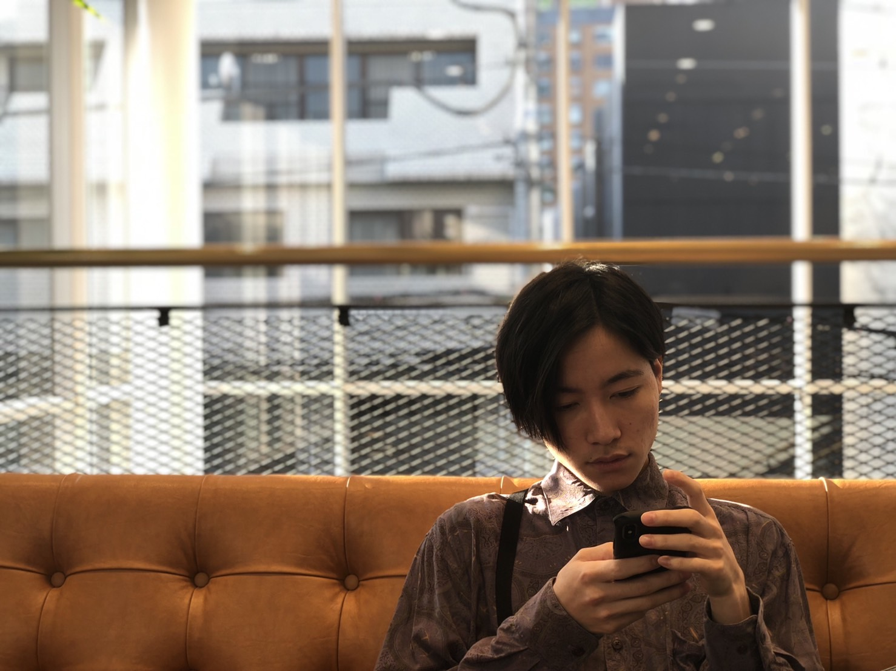

About Me

にしお りょうや
2020年5月 珈琲屋を退職し、
同時期より神奈川県にて
フリーランスエンジニアを目指し勉強しております。
前職は約２年間努めさせていただき、
副店長も任されていました。
大切にしていることは、丁寧なコミュニケーションとレスポンスの速さ、
相手をよく観察することです。
数回ご連絡をとっていただければご安心していただけると思っております。
コーヒーももちろんですが、ファッションやゲームなども好きです。
Skills
SEO対策として、タグの意味を正しく理解し
適切にマークアップしていくことで検索エンジンに
より良いサイトだと認識させることを目標にしています。
デザインを忠実に再現することを目標にしています
ユーザーインターフェースに動きをつける事のできるjavascriptを使う事で、サイト上でのユーザー体験をよりよいものにすることを目標としています。

理想とするデザインを作る為、コミュ二ケーションを細かく取り認識の違いを無くすよう心がけています。顧客やペルソナにあったデザインを提供することを目標にしています。
Works


Contact
ryoooya.r@gmail.com